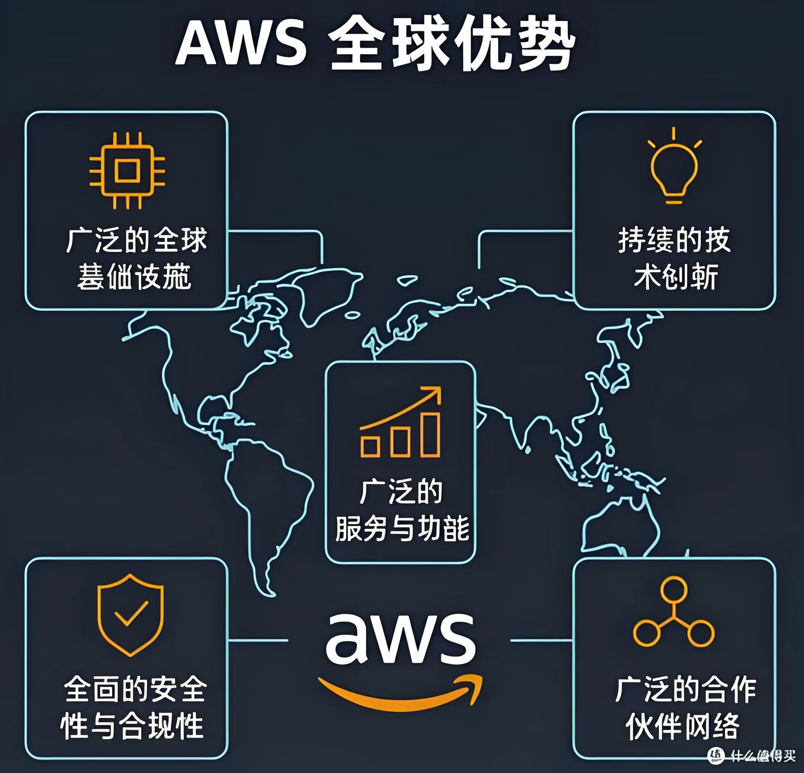

AWS 雲代理服務
AWS 官方授權代理商，從賬號開通到成本優化的全流程雲服務，助力企業安全、高效、低成本使用全球領先的 AWS 雲。
服務概述
作為 AWS 官方授權代理商，香港九寬科技致力於為企業提供一站式 AWS 雲服務解決方案。我們擁有專業的雲架構師團隊，能夠幫助您從 0 到 1 快速上雲，並提供持續的技術支持和成本優化服務，讓您專注於核心業務發展。
AWS 雲架構服務
覆蓋上雲全生命週期的專業服務，讓每一分雲投入都物超所值。

- AWS 賬號開通與管理：協助企業快速註冊 AWS 賬號，完成實名認證和權限配置。
- 雲架構規劃與設計：根據業務需求，設計高可用、高安全、可擴展的雲上架構。
- 上雲遷移服務：提供從傳統 IDC 或其他雲平台到 AWS 的無縫遷移方案。
- 成本優化諮詢：分析賬單，提供資源優化建議，降低雲服務成本。
- 技術支持與培訓：提供 5×8 或 7×24 小時技術支持，以及 AWS 使用培訓。
AWS 服務覆蓋矩陣
覆蓋 AWS 全品類核心服務，按業務場景精準選型。
| 服務類別 | 核心服務 | 典型應用 |
|---|---|---|
| 計算 | EC2 · Lambda · ECS · EKS · Batch | Web 服務、批處理、容器化應用 |
| 存儲 | S3 · EBS · EFS · Glacier | 對象存儲、塊存儲、歸檔備份 |
| 數據庫 | RDS · DynamoDB · Aurora · Redshift | 關係型、NoSQL、數據倉庫 |
| 網絡 | VPC · CloudFront · Route 53 · Direct Connect | 專有網絡、CDN 加速、域名解析 |
| AI / ML | SageMaker · Bedrock · Rekognition | 模型訓練、生成式 AI、圖像識別 |
| 安全 | IAM · KMS · GuardDuty · WAF | 身份管理、加密、威脅防護 |
行業解決方案
結合行業最佳實踐，為不同業務場景定製 AWS 上雲架構。
跨境電商
CloudFront 全球加速 + S3 靜態資源 + EC2 Auto Scaling，支撐大促高併發。
遊戲出海
GameLift 全球匹配 + 多區域部署 + DynamoDB 玩家數據，低延遲遊戲體驗。
AI 應用
Bedrock 大模型接入 + SageMaker 模型訓練 + Lambda 無伺服器推理端點。
大數據分析
EMR 集群 + Redshift 數倉 + Kinesis 流式攝入，PB 級數據實時分析。
金融科技
VPC 私有網絡 + KMS 加密 + CloudHSM 合規密鑰，滿足金融級安全要求。
流媒體直播
IVS 互動直播 + S3 + CloudFront，端到端低延遲視頻分發方案。
雲成本優化策略
從計費模式到架構設計，全方位降低 AWS 使用成本。
預留實例 (RI)
承諾 1 年或 3 年使用週期，較按需計費最高節省 72%。適合長期穩定負載。
節省計劃 (Savings Plans)
以用量承諾換取折扣，跨實例族靈活使用，最高節省 50%+，比 RI 更靈活。
Spot 實例
利用閒置算力，價格低至按需的 10%。適合批次任務、容錯工作負載。
架構級優化建議
- Auto Scaling：按負載自動擴縮容，閒時縮減至最小實例，避免資源閒置。
- 無伺服器 (Serverless)：事件驅動場景用 Lambda 替代常駐 EC2，按調用計費。
- 分層存儲：熱數據用 S3 Standard，冷數據自動轉 Glacier，存儲成本降 80%+。
- 成本可視化：啟用 Cost Explorer + Budgets + Anomaly Detection，實時監控異常花費。
雲遷移方法論
AWS Migration Acceleration Program (MAP) 框架，科學有序推進上雲。
評估 (Assess)
盤點現有 IT 資產，分析應用依賴關係，評估雲就緒度與遷移優先級。
規劃 (Mobilize)
設計目標架構，制定遷移計劃，建立 Landing Zone 基礎環境與安全基線。
遷移 (Migrate)
按計劃分批遷移，採用 Re-host / Re-platform / Refactor 策略，最小化業務中斷。
優化 (Optimize)
上雲後持續優化架構，引入託管服務，實施成本優化與性能調優。
運營 (Operate)
建立雲上運維體系，CloudWatch 監控 + 自動化運維 + 定期架構評審。
為什麼選擇我們
官方授權 + 專業團隊 + 本地化服務，讓上雲更省心。